테라로사Terarosa
2002 年从江陵起家，韩国精品咖啡的奠基品牌之一。门店空间大，多数可看到烘焙。
点什么 에티오피아 시다마 벤사 헤어룸 워시드 ₩7,500——最能代表 Terarosa 的一支单品；甜口选 강릉 크림 라떼 ₩7,200；配 시그니처 피칸파이 ₩7,300。
真实评价 · 共性「空间感是国内咖啡店里少有的」「单品比拿铁更值得点」「江陵奶油拿铁是甜党的安全牌」——광화문점 TripAdvisor 4.4 / 5。
法定假期 9/24—9/26。因未与周日重叠，9/28 不设补休。
| 名称 | 时间 | 25 | 26 | 27 |
|---|---|---|---|---|
| 景福宫 | 09:00—18:00（9—10月） 入场至 17:00 · 周二休 | ✓ | ✓ | ✓ |
| 德寿宫 | 09:00—21:00 入场至 20:00 · 周一休 | ✓ | ✓ | ✓ |
| N 首尔塔 | 10:00—23:00 全年无休 | ✓ | ✓ | ✓ |
| 南山缆车 | 10:00—23:00 售票 09:30 起 | ✓ | ✓ | ✓ |
| 北村 11 길 | 10:00—17:00 周日禁入 | ✓ | ✓ | ✗ |
| 广藏市场 | 摊位各异 多为 09:00—21:00 | ✗ | ? | ? |
| 名称 | 时间 / 定休 | 25 | 26 | 27 |
|---|---|---|---|---|
| 明洞饺子 | 10:30—21:00 仅秋夕当天休 | ✗ | ✓ | ✓ |
| 又来屋 | 11:30—21:00 周一 + 秋夕 3 天休 | ✗ | ✗ | ✓ |
| 河东馆 | 07:00—16:00 周日休 · 售罄即止 | ? | ? | ✗ |
| 陈玉花一只鸡 | 10:30—翌 01:00 未见定休 | ? | ? | ? |
| 金猪食堂 | 11:30—23:00 LO 22:15 | ? | ? | ? |
| 高丽参鸡汤 | 平 10:30—21:00 周末 10:30—20:30 | ? | ? | ? |
| 光化门汤饭 | 11:00—21:40 休 14:00—17:00 · 周日休 | ? | ? | ? |
| 万船 Hof | 12:00—24:00 全年无休 | ✓ | ✓ | ✓ |
| 名称 | 时间 | 25 | 26 | 27 |
|---|---|---|---|---|
| Onion 安国 | 平 07:00 / 周末 09:00 —22:00 | ? | ? | ? |
| 咖啡韩药房 | 10:00—22:00 · LO 21:00 | ? | ? | ? |
| Intelligentsia 西村 | 平 08:30—19:00 周末 10:00—20:00 | ? | ? | ? |
| Terarosa 清溪广场 | 平 08:00—21:00 周末 09:00—21:00 | ? | ? | ? |
| Terarosa 三清洞 | 10:00—18:00 周三·六至 21:00 | ? | ? | ? |
自 2026 年 1 月 1 日起，韩国对所有外国人强制要求提交 e-Arrival Card，纸质入境卡已废止。
提交后截图存手机。没提交的话落地只能现场用手机补办，排队会很久。
签证请按你们的护照类型自行确认；K-ETA 临时免除已延长至 2026 年 12 月 31 日（适用于免签国家）。
220V / 60Hz，圆形两脚插孔（欧标 C / F 型）。中国扁脚插头必须带转换器——酒店前台通常可借，但别指望。
手机和笔记本的充电头基本都是 100—240V 通用，只需改插头形状，不需要变压器。
充电宝必须随身（本来也不能托运），100Wh 以下免申报。
9 月底首尔约 15—26℃，日夜温差大。白天薄长袖，早晚一定要有外套。
韩国没有小费文化，账单就是全部。餐厅小菜免费续，但别剩太多。
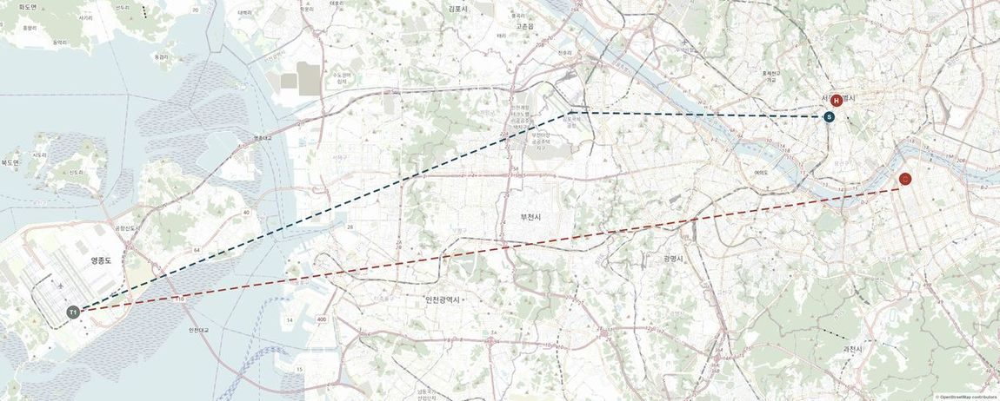
蓝色虚线＝9/25 抵达（AREX 机场铁路 → 首尔站 → 市厅）。红色虚线＝9/27 返程（新沙站 6009 号机场巴士 → T1）。
两条线基本平行，都沿汉江西行——所以市厅正好在去机场的路上。
9/25 落地 20:15。无托运行李——不用等行李转盘，这为你们省下 20—30 分钟，也正是巴士来得及的原因。
| 方式 | 时间 | 两人 | 末班 |
|---|---|---|---|
| 6701 巴士 ★ | 70—80′ | ₩36,000 | 21:35 |
| AREX 一般列车 | 75′ | 约 ₩9,000 | 23:40 |
| 出租车 | 60—75′ | ₩90,000+ | — |
₩18,000/人 · 70—80 分钟 · T1 末班 21:35 · 25—35 分钟一班 · 运营商 K리무진 02-2667-0386
₩4,450/人 · 约 59 分钟到首尔站 · 班次密集，不怕误点
₩85,000 起（官方参考价，中型）· 60—75 分钟 · 22:00—04:00 加成 20%
全天路线用地铁 + 步行两人约 ₩12,000，全打车约 ₩45,000。建议混合：长段地铁，1—3 km 短段打车。你们住市厅站（1、2 号线交汇），位置极好。
| 路段 | 方式 | 时间 | 两人 |
|---|---|---|---|
| 酒店 → 新沙 | 出租车 ★ | 25—30′ | ₩13,000—17,000 |
| 地铁 2→3 号线 | 35—40′ | ₩3,100 | |
| 新沙 → T1 | 6009 机场巴士 ★ | 80—100′ | ₩34,000 |
| 出租车 | 60—75′ | ₩70,000—90,000 |
返程建议 6009 号机场巴士：신사역 上车（离诊所步行 4 分钟），直达无换乘，₩17,000/人，末班 20:10。只有背包，坐大巴最舒服，比打车省一半以上。
但如果医美拖到 17:15 之后 → 直接打车，不要为省钱赌时间。
| 时刻 | 动作 |
|---|---|
| 16:45 | 理想出发（坐 6009） |
| 17:15 | 此后仍未结束 → 改打车 |
| 17:45 | 最晚出发时刻 |
| 18:30 | 抵达 T1，值机（无托运，可先网上值机） |
| 20:15 | 值机柜台通常关闭（起飞前 60 分钟） |
| 21:15 | 起飞 |
无托运行李，直接走 Arrival / 도착。入境审查通常 30—45 分钟。e-Arrival Card 截图提前调出来。
没买 eSIM 的话，13 号出口附近有 24 小时通信柜台。交通卡、换钱也都在这层。
21:15 前出关 → 冲 6701 巴士（1 层 3 号出口外 3B 站台，末班 21:35，₩18,000/人）。首尔第一站就是「시청역 더플라자호텔」，直接停在酒店门口。
晚于 21:15 → AREX 一般列车（地下 1 层交通中心，末班 23:39，₩4,450/人）→ 首尔站换 1 号线 1 站到市厅。
不想折腾 → 出租车（4—8 号出口外排队区，₩85,000 起 + 夜间加成）。
三个方案的分步走法见「交通总方案 · 第一段」。
入住时确认前台怎么帮忙叫车（9/27 用得上）。
① 明洞——步行 5 分钟。秋夕当晚最可能还开着的地方（做的是游客生意），小吃摊、连锁店、Olive Young 多半到 22:00—23:00。 地图
② 24 小时汤饭店——雪浓汤或牛肉汤，清淡暖胃。Naver Map 搜「24시 설렁탕」，挑「영업 중」的。
③ 便利店——炸鸡、바나나맛우유、허니버터칩、真露、辛拉面。CU / GS25 / 7-Eleven 遍地且 24 小时。
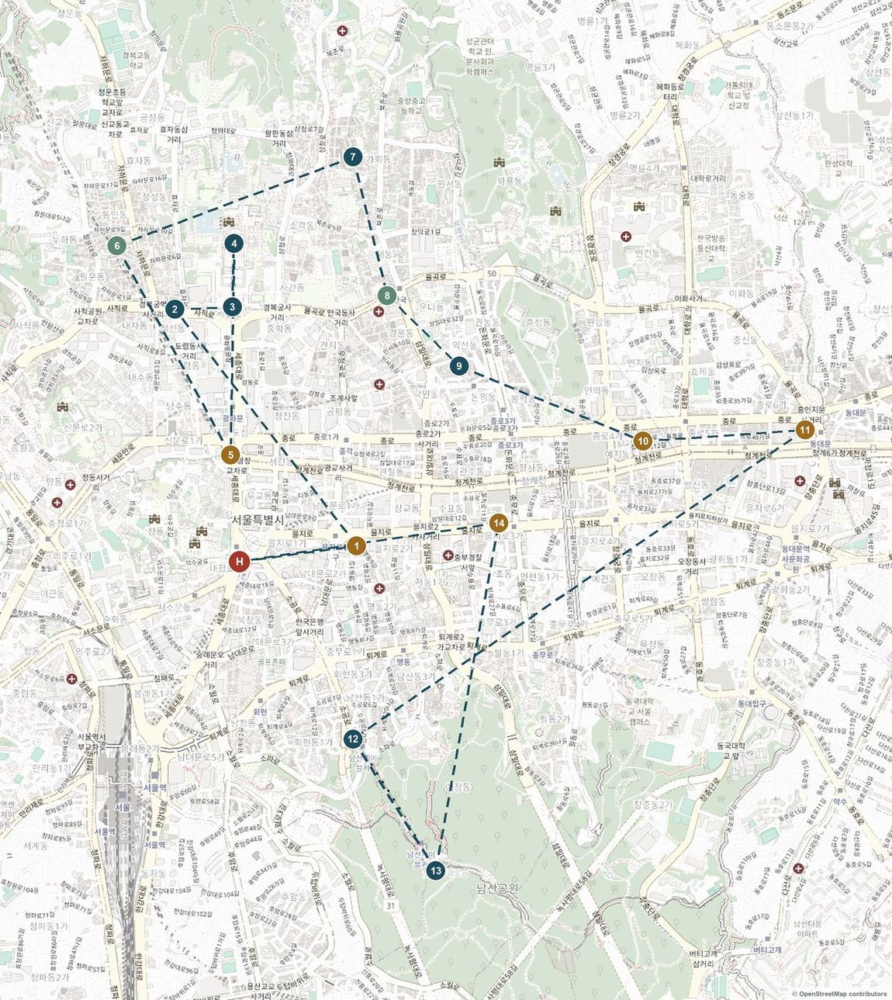
2—9 号几乎连成一条线，全程可步行。真正需要打车的只有三段：酒店→景福宫、益善洞→广藏市场、东大门→南山缆车。
跟司机说「경복궁역 4번 출구」。地铁约 20 分钟（市厅 2 号线 → 乙支路 3 街换 3 号线）。
景福宫站 3 / 4 号出口一带整条街都是韩服店，2—4 小时套餐通常含盘发。两人都穿，成套照片才好看。素色少花纹的款更耐看。
光化门前，约 20 分钟，免费，无需预约。周二（闭宫日）不办；雨雪、暴热预警时取消或改在修政殿简化举行。 地图
六百年历史的两班贵族聚居地，至今仍有居民住。 地图
1934 年韩屋改造，木梁、瓦顶、庭院全保留。安国站 3 号出口步行 3 分钟。 地图实时
1930 年代韩屋群改造的小店巷子。不用做攻略，随便钻巷子就是正确玩法。巷子窄到两人并排勉强通过，抬头是电线和瓦顶。 地图
顺路可走 10 分钟到 인사동 쌈지길 买伴手礼：韩纸、传统茶、工艺小物。
四条自保规则：① 只在明码标价的摊位坐下；② 点单前把价格问清并复述；③ 尽量刷卡；④ 选有店号、有菜单板的店面型，不选流动摊。
不想冒险就整站跳过，下一站就在旁边。
1978 年，东大门综合市场美食巷，只做「一只鸡」一道菜。从广藏市场步行 10 分钟。营业到凌晨、未见定休，秋夕期间最可能开着的名店。 地图实时
明洞站或会贤站步行 10 分钟到南山缆车站。缆车 10:00—23:00，往返 ₩15,000 / 单程 ₩12,000，往返票末班 22:30、单程 22:45。 地图
下山后走 10 分钟到乙支路 3 街。黄招牌，满街塑料桌。全年无休，秋夕也开——今晚最稳的一站。 地图实时
回酒店顺道逛 Olive Young 明洞旗舰店（多数营业到 22:30 后）。注意：护肤品只买 100ml 以下。面膜也算液体、很占拉链袋，和大瓶装一起留到机场免税店。
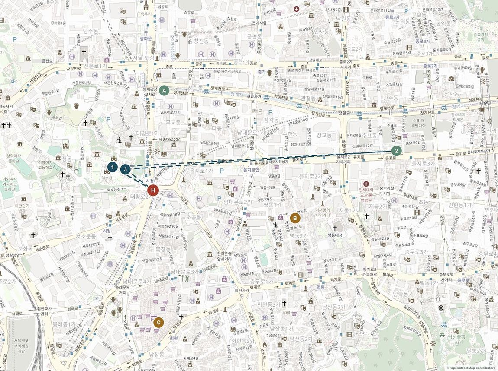
上午全程步行 15 分钟圈内，11:30 回酒店退房。
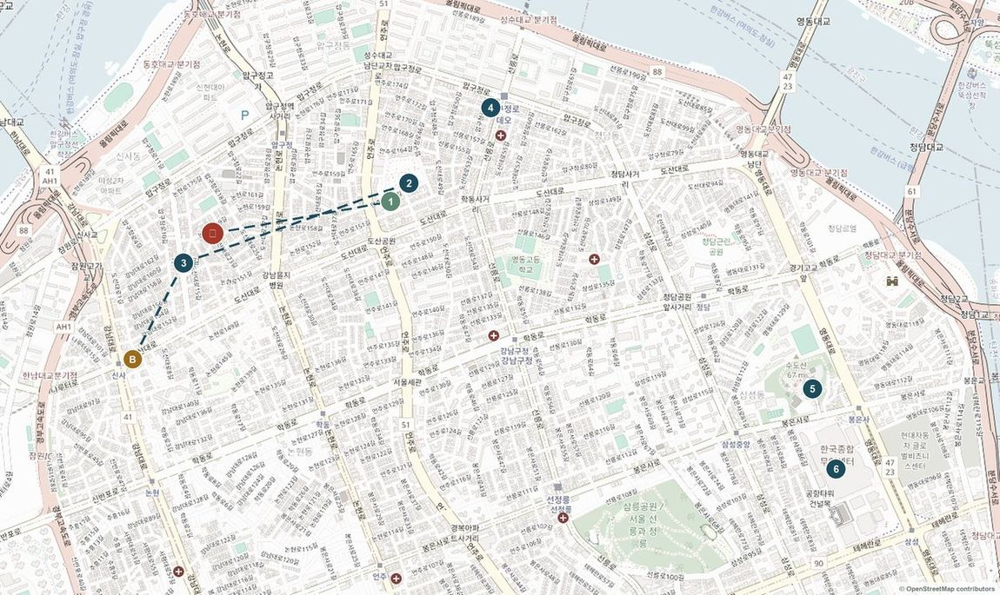
1—3 号在诊所步行 10 分钟内，4—6 号需打车 5—15 分钟。B 是 16:45 上车点。
液体全部装进 1L 透明拉链袋（每人 1 袋），充电宝放随身。
河东馆周日休、明洞饺子 10:30 才开，今天早餐只能在酒店。
酒店马路对面，看 15 分钟。规模比光化门小但离得近，能看清服饰细节。周一及雨雪、极端天气停办。 地图
退房时间 12:00。背包随身带走，不用寄存也不用回来。
术前吃点东西但要清淡。가로수길 / 도산공원 一带的 brunch、面食、沙拉都合适。
顺路可拐 NUDAKE HAUS DOSAN（Gentle Monster 旗下艺术甜点店，招牌 Peak Cake 黑色山峰造型），步行 5 分钟。 地图
提前 10 分钟到。带口罩、帽子、墨镜、防晒霜、习惯用的保湿霜、素颜对比照。新沙站（3 号线）1 号出口步行 4 分钟。 地图
① HAUS DOSAN（步行 5 分钟）——一栋楼解决伴手礼：Gentle Monster 墨镜、Tamburins 香水与护手霜、NUDAKE 甜点。香水和护手霜注意 100ml 限制。 地图
② 咖啡——도산공원 / 가로수길 一带口碑较好的自烘焙店有 카멜커피、히트커피 로스터스 신사、테일러커피、마일스톤커피。这一带店铺更替快，到了用 Naver Map 按评分现挑。 实时
③ 도산공원 + 가로수길——岛山公园安静，林荫道步行 10 分钟，Apple 旗舰店、买手店。 地图
④ 跑远一点——打车 15 分钟到 COEX 星空图书馆（13 米书墙，5 分钟拍完）；隔壁 奉恩寺是市中心最漂亮的寺庙，玻璃幕墙与千年古刹同框。 地图
신사역 上车（诊所步行 4 分钟），直达无换乘，80—100 分钟。
若 17:15 仍未结束 → 直接打车（60—75 分钟，₩70,000—90,000）。最晚 17:45 必须出发。
无托运行李，建议提前网上值机，到场直接过安检。
退税：单笔 ₩30,000 以上、贴 Tax Free 单据的商品，在 3 层退税 KIOSK 扫描登记，商品需可出示。
大瓶护肤品在这里买——免税店密封袋（STEB）内附收据、未开封，不限容量可上机。
晚餐：T1 4 楼（安检前）是本地价格的餐饮层；出境后免税区里也有。太太术后避免辛辣、过热、酒精。
2002 年从江陵起家，韩国精品咖啡的奠基品牌之一。门店空间大，多数可看到烘焙。
旧楼窄巷里的古董药铺风格空间。
海豹标志，韩国辨识度最高的自烘焙品牌。咖啡和面包在菜单上是对等的两条主线，周末排队。
芝加哥精品咖啡老牌在西村的据点，手冲 + 烘焙。安静、专业，不是打卡店。点手冲单品。
国内少见的以 90+ 咖啡（杯测 90 分以上）为主的烘焙店。浅烘、果酸明亮。
摔跤面具标志。韩国产地直采（Direct Trade）的先驱，也做咖啡师培训。
废弃制鞋厂改成的自烘焙空间，机器和梁柱都留着。工业冷感 + 自家烘焙。
1934 年韩屋改造，庭院、木梁、瓦顶全保留。首尔韩屋咖啡的标杆。
Gentle Monster 旗下的艺术甜点店，空间像美术馆。
1960 年开业，韩国第一家参鸡汤专门店，连续七年入选米其林指南。用出生七周的童子鸡，汤清爽、肉紧实，石锅上桌。
主厨박찬일，连续 8 年米其林必比登。
1930 年代至今，首尔最老的곰탕之一，米其林必比登常客。汤清澈无膻味，肉与内脏处理得极干净。
1978 年，只做一道菜，用出生 35 天的童子鸡。
1966 年，米其林必比登。
米其林收录，首尔猪肉烤肉的名片。店员全程代烤。
1946 年，米其林收录，牛肉香浓的清汤平壤冷面用瓷碗盛。秋夕连休三天全休。
伴手礼（都不受液体限制）：调味紫菜、蜂蜜柚子茶、红参、咖啡豆、药果、袜子。
受液体限制：护肤水乳、精华、防晒、面膜、香水、马格利、烧酒——市区只买 100ml 以下，大瓶留到机场免税店。
1394 年，朝鲜太祖李成桂把首都从开京迁到汉阳——今天的首尔。此后六百年，这座城市的所有变化都围绕一件事展开：谁在中轴线上，谁被推到边上。
你们这两天走的路线，几乎就是这条中轴线本身。景福宫是起点，往南是市井（清溪川、广藏市场、明洞、乙支路），往北和往东是韩屋区（北村、益善洞），最南端是南山。江南是 1970 年代之后才被开发出来的另一个首尔。
据 13 世纪的《三国遗事》，天神之子桓雄与化为人形的熊女结合，生下檀君王俭，于公元前 2333 年建国。这是建国神话而非信史，但韩国的「檀纪」纪年至今从这一年算起——2026 年即檀纪 4359 年。
可考的部分从古朝鲜开始。公元前 194 年，燕人卫满取得政权，史称卫满朝鲜。公元前 108 年，汉武帝出兵灭之，王险城陷落，设乐浪等郡。半岛北部此后数百年在中原王朝的郡县体系内。
按《三国史记》的纪年：新罗前 57 年、高句丽前 37 年、百济前 18 年先后建国。三方在满洲与半岛上互相攻伐了七百年。
据有满洲与半岛北部，三国中疆域最大、军事最强。5 世纪广开土王与长寿王时期达到顶点，一度将高句丽的势力推到今天中国东北的广大地区。古坟壁画是它留下的最重要遗产——狩猎、乐舞、四神图，笔触粗犷。
据半岛西南部，三国中最擅长外交与工艺，与中国南朝和倭国（日本）往来密切，把佛教和汉字文化传入日本。金铜大香炉和武宁王陵的出土品，代表了当时东亚金属工艺的最高水平。
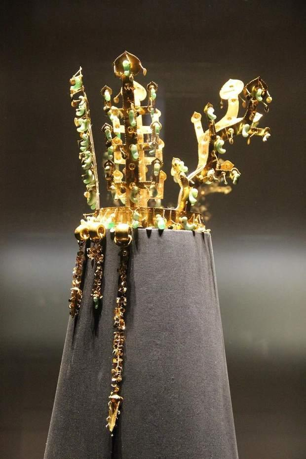
据东南部，起步最晚、地处偏僻，却笑到最后。黄金工艺举世无双——出土的金冠、金腰带极尽繁复。后期建造的佛国寺与石窟庵，是韩国佛教艺术的巅峰。
常被忽略的「第四国」。洛东江流域的城邦联盟，铁器冶炼极发达，铁锭是当时东亚的硬通货。532 年金官伽倻并入新罗，562 年大伽倻灭亡。
结局：新罗与唐结盟，660 年灭百济，668 年灭高句丽。但唐随即想吞并整个半岛，新罗转而与唐开战，676 年击退唐军，统一了大同江以南。
统一新罗（676—935）以庆州为都，设九州五小京，佛教鼎盛。这是半岛第一次出现单一政权，也是韩国「一个民族」意识的起点。
渤海（698—926）由高句丽遗民与靺鞨人在北方建立，唐人称其为「海东盛国」。渤海是否属于韩国史，中韩学界至今有分歧——这是理解今日东北亚历史争议的一把钥匙。926 年渤海亡于契丹。
新罗末期，地方豪族割据，892 年甄萱建后百济，901 年弓裔建后高句丽，史称后三国。
918 年王建建高丽，定都开京（今朝鲜开城），936 年统一后三国。「高丽」经由阿拉伯与西域商人传向西方，成了这个国家在世界上的名字——Korea。
高丽崇佛，文化上极其精致。
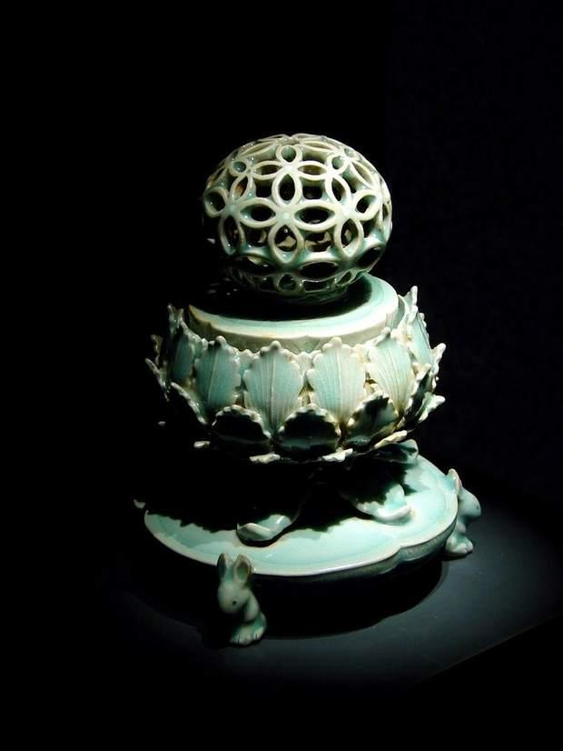
「翡色」青瓷与镶嵌青瓷（在胎体上刻花再填白土黑土），是东亚陶瓷史上的高峰之一。宋人徐兢在《宣和奉使高丽图经》里说高丽青瓷「色泽尤佳」——中国人当时是服气的。
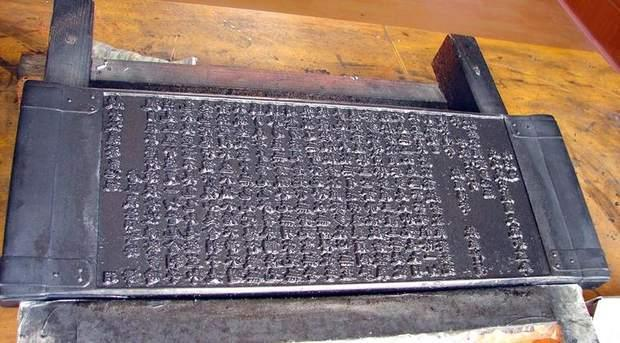
1231 年起蒙古六次入侵，王室迁往江华岛死守。为祈求佛力退敌，1236 年在江华开雕，1251 年完成，历时 16 年，八万余块经板。它是现存世界上最古老、体例最完整的大藏经，现藏庆尚南道海印寺，2007 年列入世界记忆遗产。
高丽发明了世界最早的金属活字印刷。现存最古的金属活字本是 1377 年清州兴德寺刊行的《直指心体要节》，比古腾堡早约七十年。
14 世纪末，倭寇与红巾贼交侵，武将李成桂在抗倭中崛起。1388 年他在威化岛回军，掌握实权。
1392 年李成桂即位，次年定国号朝鲜，1394 年迁都汉阳，1395 年景福宫落成。
新王朝的意识形态是崇儒抑佛：性理学（朱子学）成为国教，佛寺被逐出都城。奉恩寺之所以特殊，正因为它是这个排佛体制里被保留下来举办僧科考试的地方。
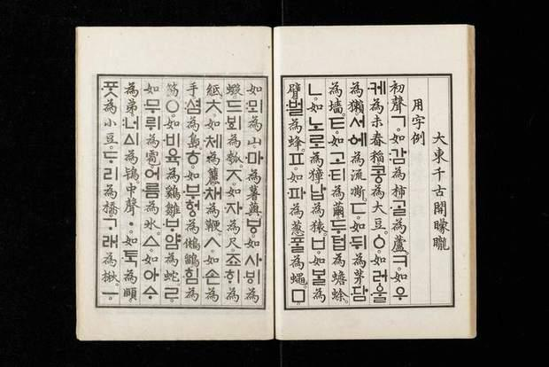
韩国历史上唯一被称为「大王」的君主，光化门广场上那尊金色坐像就是他。
1443 年创制训民正音，1446 年正式颁布。在此之前，朝鲜只有汉字，识字是贵族的特权。世宗在颁布序文里写得非常直白：百姓有话想说却写不出来，我为此可怜他们，所以造了这二十八个字。
同一时期还有测雨器、浑天仪、《农事直说》、雅乐整理——这是朝鲜的科学与文化高峰。
丰臣秀吉以「借道伐明」为名入侵，二十天攻陷汉阳。景福宫在这场战争中焚毁，此后成为废墟 273 年——这就是为什么你们今天看到的景福宫是 1867 年的建筑。
李舜臣的水军是转折点：闲山岛、鸣梁、露梁诸役切断日军补给线。光化门广场上另一尊铜像就是他。明朝派援军入朝作战，秀吉死后日军撤退。
清军入侵，仁祖困守南汉山城四十五日后出降，在三田渡行三跪九叩之礼。对以「小中华」自居的朝鲜士大夫，这是比壬辰倭乱更深的精神创伤。
17—18 世纪，实学兴起——一批学者主张放下空谈、研究农政水利与商业，丁若镛是代表。
英祖与正祖被视为朝鲜后期的中兴之主。1795 年正祖为母亲惠庆宫洪氏花甲，率大队人马巡幸华城——清溪川墙上那幅近两百米的瓷砖班次图，画的就是这一次。
19 世纪进入势道政治，外戚专权，民生凋敝。1863 年高宗即位，其父兴宣大院君摄政，1865 年起重建景福宫，同时厉行锁国。
前十年是武断统治：宪兵警察制，集会结社言论全面禁止。
1919 年 3 月 1 日，三十三名民族代表在首尔发表独立宣言，学生在塔谷公园宣读，随后演变为席卷全国的和平示威，参与者数以百万计，遭到武力镇压。同年 4 月，大韩民国临时政府在上海成立——今天韩国宪法前言仍称继承其法统。
三一运动后日本改行「文化统治」，放松部分管制、扶植亲日势力。1920 年代，正是在这个背景下，郑世权在钟路一带抢建韩屋，不让日本人的生活圈北扩——北村和益善洞就是这么来的。
1930 年代进入战时体制：皇民化政策、创氏改名、禁用朝鲜语、强制征用与慰安妇。
象征性的一笔：朝鲜总督府大楼直接盖在景福宫勤政殿正前方，把整座宫遮住。这栋楼一直到 1995 年才被拆除。
三年战争造成数百万人死伤，首尔几乎被夷平。今天首尔看不到多少战前建筑，原因就在这里。
| 时代 | 去哪儿看 |
|---|---|
| 三国 · 高丽 | 国立中央博物馆（新罗金冠、高丽青瓷） 注：百济金铜大香炉真品在国立扶余博物馆，首尔展的是复制品 |
| 朝鲜前期 ★ | 景福宫、宗庙、光化门世宗大王像 |
| 壬辰倭乱 ★ | 景福宫那空白的 273 年、光化门李舜臣像 |
| 朝鲜后期 ★ | 清溪川的正祖班次图（1795 年华城行幸） |
| 大韩帝国 ★ | 德寿宫石造殿、静观轩、重明殿 |
| 日据 ★ | 北村与益善洞的韩屋（郑世权的抵抗性开发） 西大门刑务所历史馆、塔谷公园（三一运动起点） |
| 韩国战争 | 战争纪念馆（龙山） |
| 开发年代 ★ | 清溪川——它本身就是那条高架路的遗址 |
| 民主化 ★ | 明洞圣堂 |
| 当代 ★ | 江南、星空图书馆、HAUS DOSAN |
H 是酒店（市厅），★ 是医美诊所（新沙）。两者相距约 8 公里，车程 25—30 分钟。
红色虚线就是 9/27 那天你们要走的唯一一段长距离。
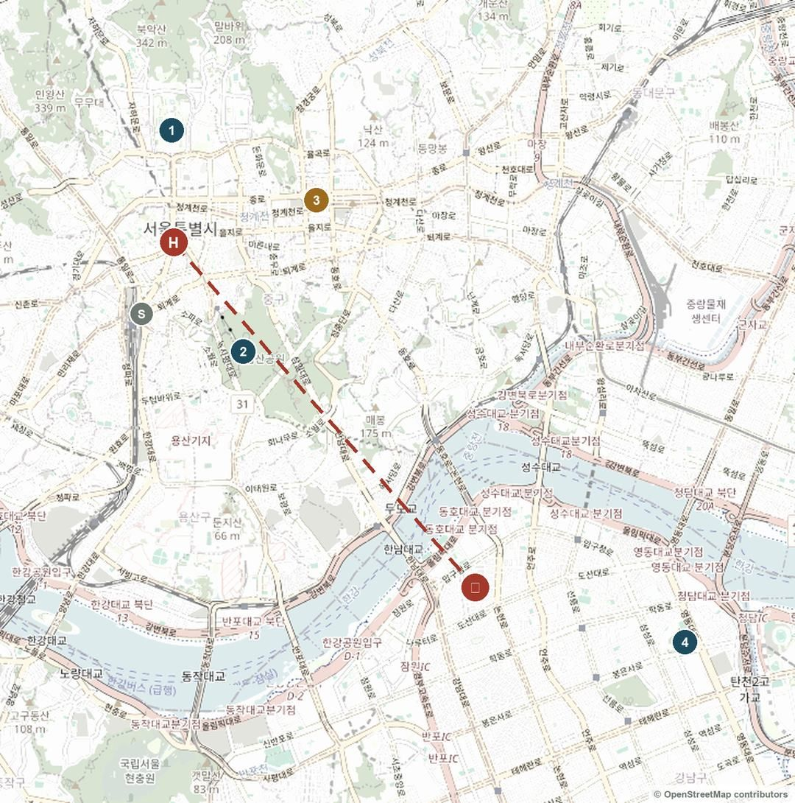
蓝色数字按游览顺序排列，虚线是当天的动线。绿色字母是顺路可加的备选点。
全程 90% 在步行 + 短途打车范围内。
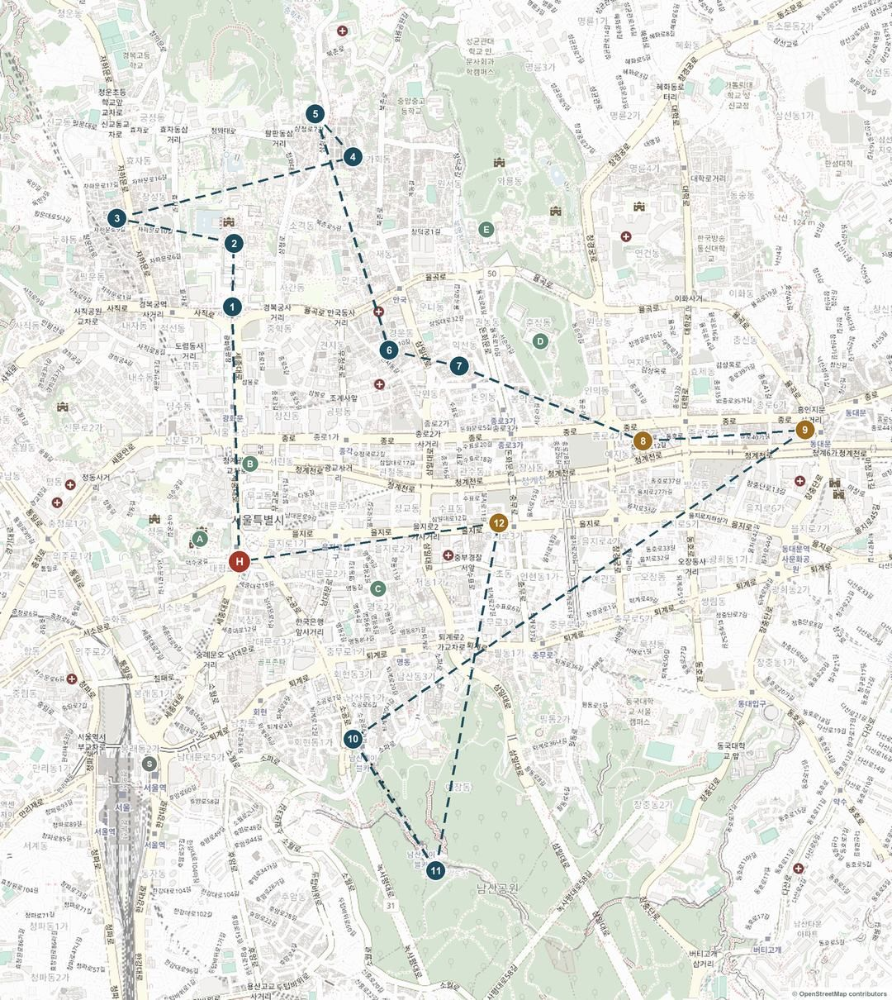
★ 是诊所。1—3 号全部在步行 10 分钟内，4—6 号需要打车 5—15 分钟。
B 是新沙站，6009 号机场巴士就在这里上车。
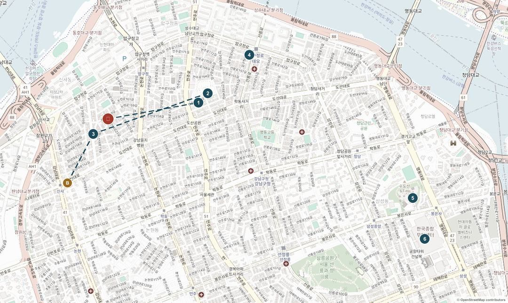
木构上的青绿红白黑五色彩绘。不只是装饰——颜料含矿物毒性，可以防虫防腐；同时用图样的繁简标示建筑等级。正殿最繁，仓库最简。
五座山峰、红日、白月、两道瀑布、左右松树。只出现在国王的座位背后，象征他统治的万物与王朝永续。国王不在的时候，这幅屏风就代表国王本人。
正殿前御道两侧的小石碑，从正一品排到正九品。文官在东，武官在西。朝会时按石头站位——这是一张立体的朝廷组织图。
屋脊转角上那一排小兽。数目越多等级越高，取自《西游记》人物，用来镇火驱邪。抬头数一数，正殿和偏殿一眼就分得出。
日、月、山、水、松、竹、龟、鹤、鹿、不老草——十种长寿的象征。最常出现在王妃与大妃居所的烟囱和墙上，因为那是祝福长寿的地方。
「天是圆的，地是方的」。庆会楼的柱子把这句话直接盖了出来：外圈 24 根方柱，内圈 24 根圆柱。走到楼下抬头一看就懂。
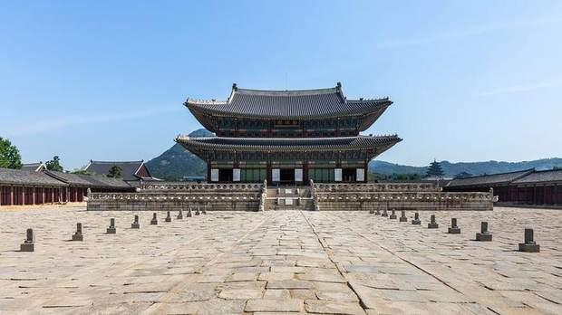
1395 年建成，是朝鲜迁都汉阳后的第一座正宫（법궁）。名字由开国功臣郑道传所取，出自《诗经》「既醉以酒，既饱以德，君子万年，介尔景福」——已经醉于酒、饱于德，愿君万年，天赐洪福。
1592 年壬辰倭乱中焚毁，此后整整 270 余年是一片废墟。国王搬去昌德宫办公，景福宫只剩地基和荒草。
1865 年（高宗二年），高宗的父亲兴宣大院君力排众议决定重建，1868 年竣工，五百余栋建筑密如迷宫。这是朝鲜王朝在灭亡前四十多年，对王权最后一次大规模的表态——也几乎掏空了国库。（文中「1867 年」为主要殿阁完工的通行简称）
日据时期宫内建筑被大量拆除，朝鲜总督府直接盖在勤政殿前面。1990 年代起持续复原至今，你们今天看到的，绝大部分是 1867 年的形制。
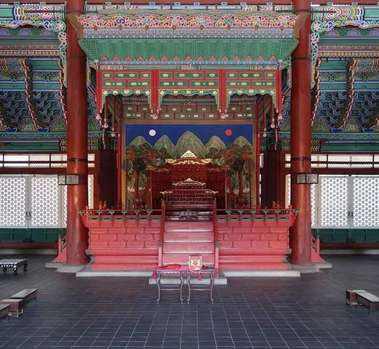
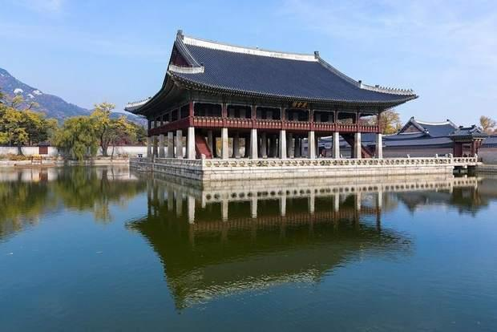
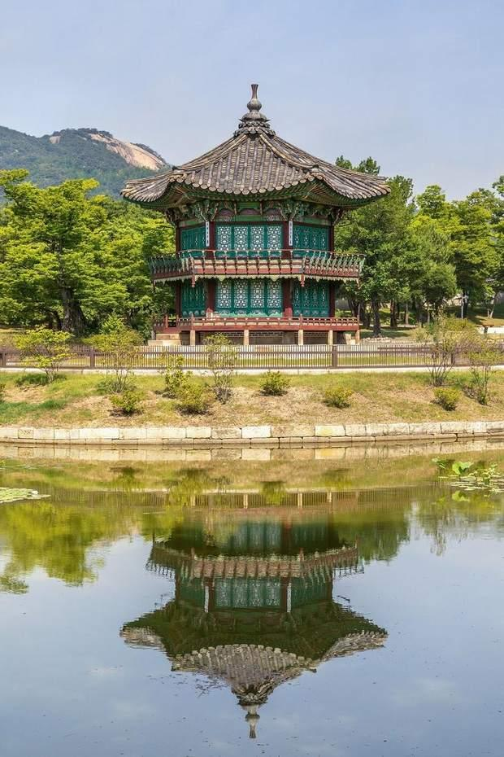
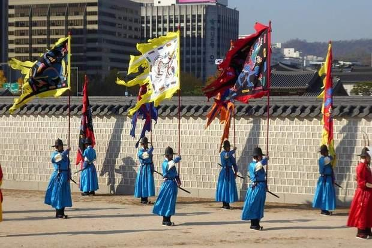
守门将（수문장）是朝鲜负责王宫各门开闭与守卫的将领。宫门什么时候开、什么时候关、谁能进，都由他执行。这是一个真实存在了五百年的官职，不是虚构角色。
今天的仪式是根据《朝鲜王朝实录》等文献考证复原的。1996 年 5 月 29 日首次彩排、6 月 15 日正式举行——最初是在德寿宫大汉门，1997 年 4 月起成为周末常设活动，后来才扩展到光化门并成为每日项目。
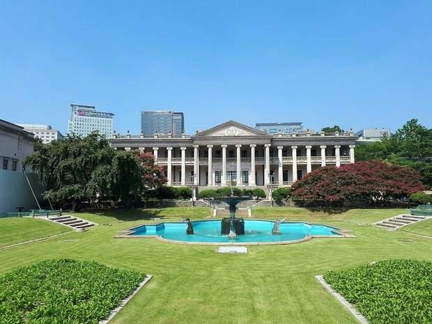
这里原本不是宫，是成宗之兄月山大君的私宅。1592 年壬辰倭乱把汉阳的宫殿烧光后，宣祖回到废墟里的汉阳无处可住，只好把这处私宅当作临时行宫。光海君后来把它正式定名为庆运宫。
1896 年，高宗为躲避日本势力逃入俄国公使馆（俄馆播迁）。1897 年他还宫到这里，同年 10 月宣布大韩帝国成立，自称皇帝——这是朝鲜王朝五百年里唯一一次称帝，也是它走向终结的开始。
1907 年高宗被迫退位，纯宗即位后把这里改名德寿宫，取「祝太上皇长寿」之意。1919 年，高宗在宫内的咸宁殿去世。
德寿宫是首尔最早引入近代欧洲古典主义建筑的宫殿。这种混杂本身就是那个年代的写照。
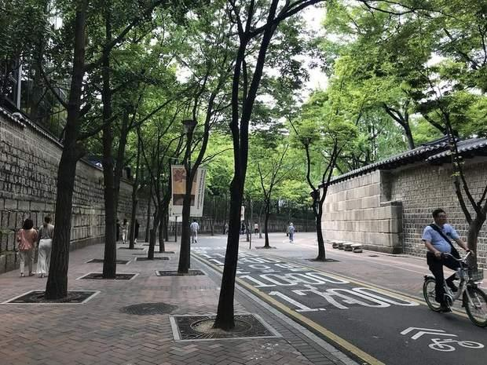
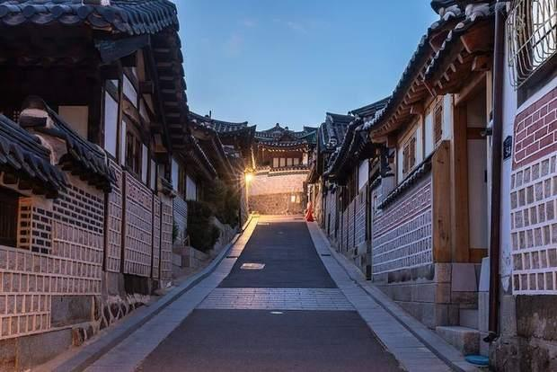
「北村」得名于清溪川以北，与「南村」（南山脚下，穷书生聚居）相对。它夹在景福宫与昌德宫之间，是朝鲜时代两班贵族的核心居住区，六百年来住的都是有权有势的人。
但——今天你们看到的韩屋，大部分建于 1920—30 年代，不是朝鲜时代的。
那时日本正把在汉江以南的日本人生活圈往北推。一个叫郑世权（정세권，1888—1965）的房地产开发商，被称为「京城的建筑王」，抱着「不能让日本人在钟路立足」的信念，从益善洞开始，在嘉会洞、三清洞一带成片建造小型「都市型韩屋」，分售给朝鲜平民。
他一个人改写了京城的地产版图。北村的韩屋是抵抗的产物，不是贵族的遗产——这是理解这个地方最重要的一句话。
官方标定了八个观景点，全程步行约 1 小时。八景中有四个集中在嘉会洞 31 番地。
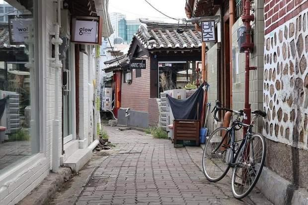
郑世权的第一个项目就在这里。1920 年代他从益善洞起步，1930 年前后在益善洞 166 番地一带成片建起都市型韩屋——把小韩屋一栋紧挨一栋地盖起来，分售给朝鲜平民。
这批房子有近百年历史，是首尔现存最老的韩屋聚落之一。
2004 年，益善洞被指定为整备区域，准备拆掉重建。计划拖了十年，直到 2014 年重建组合设立委员会解散，拆迁才正式告吹。
2015 年之后，年轻店主把这些老韩屋改成咖啡馆、酒吧和买手店。它是差一点就消失、然后靠咖啡活下来的一片街区。
不用做攻略，随便钻巷子就是正确玩法。但这四点值得留意。
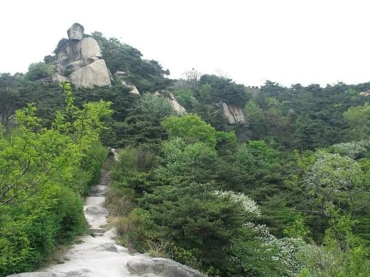
景福宫与仁王山之间。因为紧邻宫殿和社稷坛，朝鲜初期到后期一直是王族与士大夫的居住区。
真景山水画的大师谦斋郑敾就住在这里。76 岁那年他画下《仁王霁色图》（国宝第 216 号）——画的正是雨后的仁王山，也就是西村背后那座山。在此之前，朝鲜画家一味模仿中国画风；郑敾画的是自己眼前真实的朝鲜风景，这是韩国绘画史上的一次转向。
现代主义作家李箱在这里生活过；诗人尹东柱读延禧专门学校时在西村寄宿。
名字的由来是「山清、水清、人清」。从北村第八景的石阶下来就是三清洞主街，一路是画廊、设计小店和咖啡馆，接着通向国立现代美术馆。
它是北村行程最自然的收尾——走完八景，坡也下完了，正好坐下喝一杯。
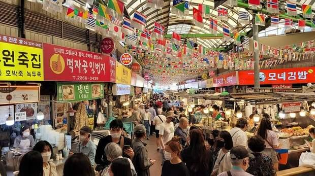
1905 年乙巳条约签订，朝鲜失去外交权。同一年，一群人决定用商业的方式回应：金宗汉等 33 名发起人以土地和现金十万元集资，成立「广藏株式会社」，宗旨是对抗日本的经济侵略、恢复国权。
发起人里有高宗的近臣金宗汉、钟路商人朴承稷（后来斗山集团的创始人）、巨商洪忠铉。
1907 年汉城府发出市场开设许可时，正式名称是「东大门市场」。1960 年代之后，为了和旁边的东大门综合市场、和平市场区分，才开始叫「广藏市场」。
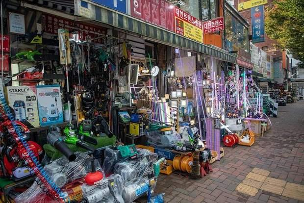
1980 年 11 月，「乙支 OB Bear」开业——它是 OB 啤酒（前身东洋啤酒）生啤加盟店，也是这条街的起点。
由来很具体：当时政府禁止 OB 啤酒直接供应下酒菜，创始人姜孝根于是自己开发了一样东西——노가리，明太鱼的幼鱼晒干后炭火烤过，当时极便宜。这道下酒菜后来成了整条街的名字。
1983 年地铁 2 号线乙支路段开通，这一带迎来全盛期。
更关键的是客源：乙支路是全国最大的印刷厂聚集区。通宵赶货的印刷工人交班后回家路上，就在这里喝一杯冰生啤配烤鱼干。这条街的原始顾客不是游客，是工人。
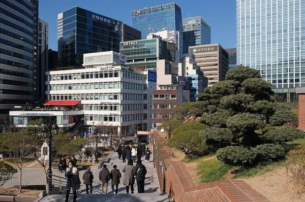
朝鲜时代这里属汉城府南部的明礼坊（명례방），也叫钟岘——这就是「明洞」的词源。当时它属于「南村」，是穷书生聚居的住宅区，和北村的两班宅邸完全是两个世界。
日据时期改名明治町，被开发成商业中心。1946 年光复后定名明洞，意思是「明亮的村子」。
1970 年代以前，这里是证券公司云集的韩国经济中心。今天旁边的茶洞、三角洞一带仍是首尔的银行区。
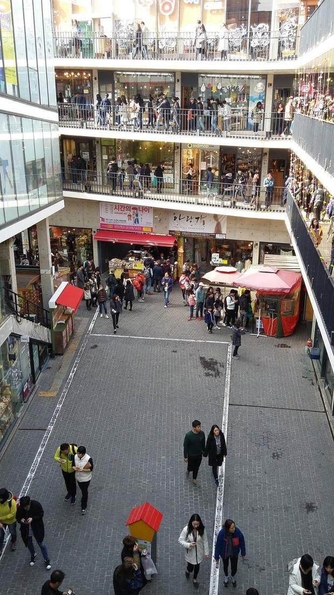
名字来自 1914 年行政区合并时，取宽仁坊的「仁」和大寺洞的「寺」拼成「仁寺洞」。
1910 年日据开始，两班失去了仕途，北村的上流阶层随之崩解。他们家里的瓷器、古书画、老家具开始流到仁寺洞变卖。1930 年代起，这里成了有名的古董一条街。
当时朝鲜总督府就在附近，日本人在这里大量收购韩国古美术品。所以仁寺洞的繁荣，本身是一段掏空的历史。
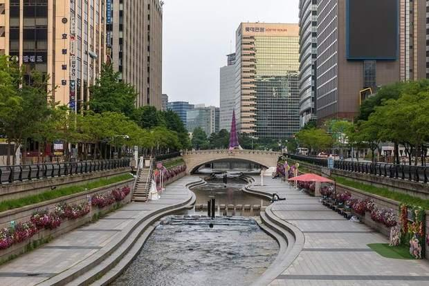
朝鲜时代汉阳的排水干渠，两岸是平民生活区。1410 年（太宗十年）在河上建了广通桥，那是当时汉阳最重要的一座桥。
1955 年从广通桥上游约 136 米开始覆盖，1958 年起全面加盖水泥。1976 年清溪高架路建成，成为首尔工业化的象征——河彻底消失了。
1990 年代，覆盖结构和高架路的安全问题开始浮现。2003 年 7 月 1 日到 2005 年 9 月 30 日，历时 2 年 3 个月，首尔市拆掉高架、复原了河道。
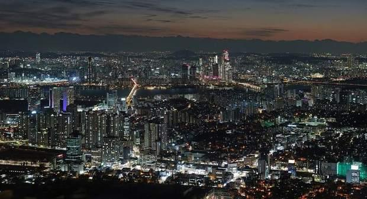
南山原名木觅山（목멱산）。1394 年迁都汉阳后就在山顶设了烽燧台。
1423 年（世宗五年），全国烽火信号的中央终点从开城松岳山移到了南山。从这一年起，全国各地的军情烽火每天在这里汇总，再报给兵曹。
山顶自东向西有五座烽燧（第一烽到第五烽），分别对应全国五条烽火线路——第一烽来自咸镜道，第五烽来自全罗道，一座山头就把整个半岛的边防连了起来。
这套系统一直用到甲午改革的次年（1895），前后约五百年。1993 年，遗址被指定为首尔市纪念物第 14 号。
1969 年 12 月，东洋、东亚、文化三家民营广播公司共同投资动工；1975 年 7 月 30 日完工；1980 年 10 月对公众开放。
塔身高 236.7 米，加上南山的海拔，塔顶总高 479.7 米。
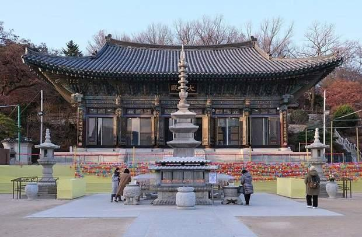
原本叫见性寺（견성사），是一座乡下小庙。1498 年作为成宗陵墓宣陵的愿刹重建，改名「奉恩」——奉承恩惠之意。
朝鲜是崇儒抑佛的国家，但奉恩寺在当时影响力极大，原因只有一个：它是僧科（승과）考试的举办地。想出家为僧，必须来这里考试。
西山大师休静和四溟堂惟政都是在这里及第的——这两人后来在壬辰倭乱中组织僧兵抗倭，是韩国历史上最有名的两位僧人。
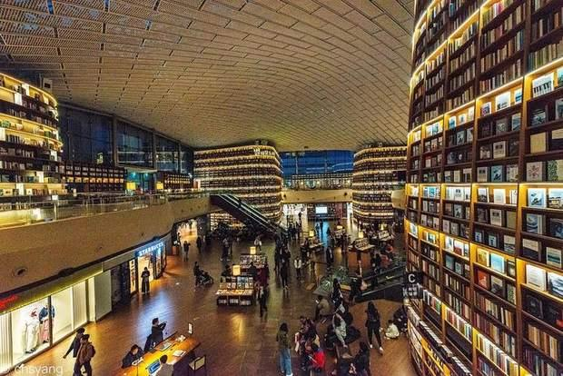
COEX 商场中庭的开放式图书馆，三面 13 米高的书墙，藏书约 5 万册（数量随策展调整），全部免费开放阅读。
老实说，它是个五分钟就拍完的地方——但和奉恩寺只隔一条街，顺路。上到二层平台往下拍，构图最好。
这不只是一片绿地。它是独立运动家岛山安昌浩（도산 안창호，1878—1938）的墓园公园。1937 年他因修养同友会事件被捕入西大门刑务所，狱中肝病与肺病急剧恶化；1937 年 12 月 23 日以「病保释」出狱，转入京城帝国大学医院，1938 年 3 月 10 日病逝。遗骨后来迁葬于此。
诊所所在的那条路「도산대로（岛山大路）」，就是以他命名的。你们要去的地址，本身带着这段历史。
公园很安静，长椅多，是江南最适合等人的地方。旁边就是 HAUS DOSAN（Gentle Monster / Tamburins / NUDAKE）和가로수길。
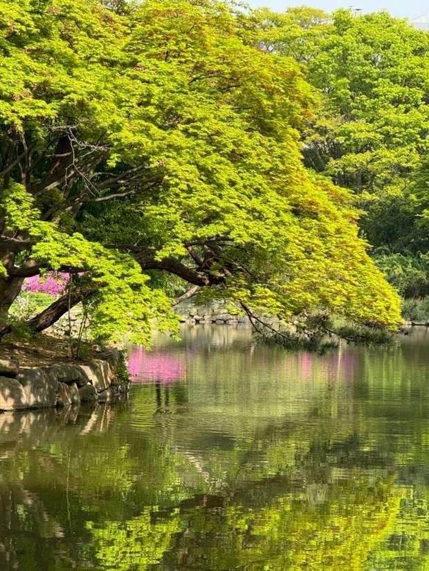
昌德宫于 1997 年 12 月在那不勒斯举行的第 21 届世界遗产委员会上列入世界遗产。它和景福宫最大的不同在于顺应地形而建——景福宫是严整的中轴对称，昌德宫是依着山势自由布局，被认为更能代表朝鲜的建筑观。
后苑（원래는 비원）是它的精华：一片保留了自然山林的王家庭园，池、亭、林随地势散布。必须提前网上预约，跟随导览进入，全程约 1 小时，人数有限，旺季常常约满。免费开放日不含后苑。
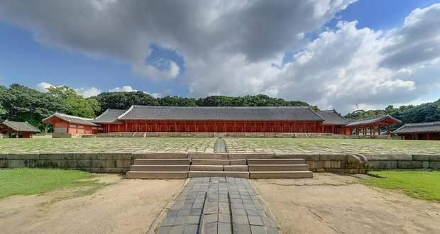
供奉朝鲜历代君王与王妃神主的祠堂，1995 年 12 月列入世界遗产。
正殿长 101 米，是韩国最长的木构建筑。它没有任何装饰性的丹青彩绘，只有一道极长的屋檐和一排排同样的柱子——这种近乎压抑的重复，是为了表达对祖先的敬畏。不少建筑师认为，宗庙正殿是韩国最伟大的一座建筑，胜过所有宫殿。
宗庙祭礼与祭礼乐也是人类非物质文化遗产。
《首尔 49 小时》回答的是「几点去哪、吃什么、怎么坐车」。
这一本回答的是「站在那儿的时候，该看什么」。
不用全记住。出发前扫一遍，到了现场翻到对应那一页，找那三五个编号的看点就够了。看懂一个细节，胜过拍二十张照片。
| 文件 | 授权 | 作者 |
|---|---|---|
| Korea - Seoul - National Museum - Incense Bu | CC BY-SA 3.0 | Steve46814 |
| Front view of the Imperial Throne Hall Geunj | CC BY-SA 4.0 | Basile Morin |
| Gyeonghoeru (Royal Banquet Hall) at Gyeongbo | CC BY-SA 4.0 | Frank Schulenburg |
| Gyeongbokgung Palace Changing of the Guard C | CC BY-SA 4.0 | Ethan Doyle White |
| Seokjojeon.jpg | CC BY-SA 4.0 | Kimhs5400(블루시티) |
| Deoksugung Palace Junghwajeon and Junghwamun | KOGL Type 1 | 국가유산청 국가유산포털 Photo by Seoyoung Kim |
| Bukchon-ro 11-gil street with hanok houses a | CC BY-SA 4.0 | Basile Morin |
| Ikseon-dong 익선동 October 1 2020 5.jpg | CC BY-SA 4.0 | S h y numis |
| LED shop in Euljiro Seoul.jpg | CC BY-SA 4.0 | Aaaatu |
| Myeongdong Cathedral 2.jpg | CC BY-SA 4.0 | kallerna |
| Ssamzigil in Insadong.jpg | CC BY-SA 4.0 | Christian Bolz (크리스티안 볼츠) |
| Cheonggyecheon stream with flowers and bridg | CC BY-SA 4.0 | Basile Morin |
| N Seoul Tower view 2.jpg | CC BY-SA 4.0 | kallerna |
| Bongeunsa Seoul 8.jpg | CC BY-SA 4.0 | kallerna |
| Library in Seoul (53608020746).jpg | Public domain | chsyang |
| Jeongjeon, Jongmyo (Summer, 2013).jpg | KOGL Type 1 | Cultural Heritage Administration |
| Changdeokgung Huwon.jpg | CC0 | Rachel.zrq |
| Water reflection of Hyangwonjeong Pavilion a | CC BY-SA 4.0 | Basile Morin |
| Gwangjang Market, Seoul 02.jpg | CC0 | Bgag |
| Gold Crown of Silla Kingdom 01c.jpg | CC0 | Gary Todd |
| Korea-Haeinsa Tripitaka Koreana woodblock 27 | CC BY-SA 3.0 | Steve46814 |
| Hunminjeongeum Haerye 30.jpg | Public domain | Government of Joseon |
| Korea-Seoul-Inwangsan-01.jpg | CC BY-SA 2.0 | Gaël Chardon |
| Jeongdong-gil (정동길), One of the most popular | CC BY-SA 4.0 | Joongwon Lee - SKKU DOA |
方向 A · 照做单次——接受部分效果。要问清「单次大概能到几成」。
方向 B · 单次加量——用更多剂量弥补次数。但加量通常伴随更高的结节风险，必须由医生权衡，不要自己要求。
方向 C · 换/加其他产品——有些产品单次即刻可见，更适合「只做一次」的场景。这家诊所同时有쥬베룩볼륨（레니스나）、리투오等。也可能建议塑妍萃 + 即刻见效产品的组合。
塑妍萃（Sculptra，韩文 스컬트라）的成分是 PLLA（聚左旋乳酸）。
它不是填充剂。玻尿酸填充是「往里填东西」，打完立刻有体积。塑妍萃是胶原蛋白刺激剂——PLLA 颗粒像种子，本身几乎不占体积，而是刺激皮肤自己长出胶原，慢慢把凹陷撑起来。
所以：刚打完看到的饱满是水肿，会消退。不要以为效果没了。
| 产品 | 成分 | 即刻可见 | 特点 |
|---|---|---|---|
| 塑妍萃 스컬트라 | PLLA | 否 | 颗粒较大，适合较深的凹陷与整体容积；需多次 |
| 颜若诗 쥬베룩볼륨 | PDLLA + 玻尿酸 | 是 | 颗粒更圆滑，结节风险相对较低；深浅层都可注射 |
| 丽妥 리투오 | 人源胶原 | 初期有 | 主打肤质（毛孔、泛红、细纹），不是容积项目 |
| 玻尿酸 필러 | HA | 是 | 立刻见效，可溶解；机理完全不同 |
此表用于帮助理解医生的建议，不构成产品推荐。适配与否取决于面部条件。
注意：不同医生的方案可能不同——有的会调整次数或天数。以你们医生的交代为准，5-5-5 只是最通行的版本。
| 品类 | 免税额度 | 换算 |
|---|---|---|
| 酒（>12 度） | 2 瓶且合计 ≤1.5L | 700ml × 2 = 1.4L 最优 |
| 香烟 | 400 支＝2 条 | 或雪茄 100 支 |
| 物品总值 | ¥5,000 | 境外获取的行李物品 |
| 酒款 | 韩免 | 折¥ | 京东 | 结论 |
|---|---|---|---|---|
| 皇家礼炮 21 年 700ml | $123.23 原 $176 | ¥834 | ¥899 券后≈829 | 持平 |
| 尊尼获加 蓝牌 750ml | $158.93 原 $227 | ¥1,076 | ¥999 | 国内便宜 |
| 格兰菲迪 18 年 普通版 | — | — | ¥518—626 | 国内便宜 |
韩媒直言조니워커 블루「국내 할인 행사보다 비싼 경우도 있다」。2 瓶额度要留给国内买不到的。
| 款式 | 容量 | 原价 | 免税折后 | 折¥ |
|---|---|---|---|---|
| 기원 달 Moon | 700ml | $61 | $37.21 ₩49,794 | ¥252 |
| 기원 해 Sun | 700ml | $68 | $41.48 ₩55,508 | ¥281 |
| 기원 달 기프트팩 礼盒装 | 700ml | $75 | $45.00 ₩60,219 | ¥305 |
| 코리안 트래블 익스클루시브 免税专供版 | 700ml | $122 | $74.42 ₩99,588 | ¥504 |
| 기원 배치7 CS | 700ml | $109 | $66.49 | ¥450 暂缺货 |
| 酒 | 容量 | 价格 | 折¥ | 渠道 |
|---|---|---|---|---|
| 화요 41 도 蒸馏烧酒代表 | 750ml | ₩4—8 万 市面 | ¥200—400 | 免税更低 |
| 화요 한글에디션 3 종 | 小瓶×3 | ₩52,900 | ¥264 | 市面 |
| 키소주 38 | 750ml | $38.23 | ¥259 | 롯데免税 |
| 키소주 22 | 750ml | $27.21 | ¥184 | 롯데免税 |
| 백제보리소주 45% | 375ml | $51.20 | ¥347 | 롯데免税 |
| 안동소주 일품 40 도 | 350ml×4 | ₩38,400 | ¥192 | 市面 |
| 한산소곡주 18 도 | 700ml×2 | ₩36,000 | ¥180 | 市面 |
| 이강주 | 400ml | ₩23,900 | ¥120 | 市面 |
| K-MAK 막걸리 | 单瓶 | ≈$4.5 | ≈¥30 | 롯데免税 |
「트래블 리테일（travel retail）」只在免税渠道卖，国内任何渠道都买不到。这类才是免税店真正的价值。
| 酒款 | 免税价 | 折¥ | 说明 |
|---|---|---|---|
| 글렌피딕 18년 VAT 4 | $130.5 原 $145 | ¥883 | 免税专供，与普通 18 年不同 |
| 발베니 15년 마데이라 캐스크 | — | — | 免税专供，马德拉桶 |
| 조니워커 아일레이 그린 1L | $49.1 | ¥332 | 1L 会占掉三分之二额度 |
2026 年 4 月起，仁川 T1 的酒类·烟草由현대면세점经营（신라与신세계因亏损退出，롯데接手香化 DF1、현대接手酒烟 DF2）。
在市区买、货送到仁川인도장，9/27 出境后凭护照 + 登机牌领取，直接带上飞机。
| 起飞时段 | 当日下单截止 |
|---|---|
| 19:00—23:59 你们 21:15 | 当日 14:30 |
| 17:00—18:59 | 当日 12:30 |
| 15:00—16:59 | 当日 10:30 |
以上为신라的时间表；另有按「起飞前 3 小时 / 5 小时」标注的商品。建议提前几天下单，别卡当天。
| 项目 | 数值 | 折¥ |
|---|---|---|
| 中国入境免税 | 400 支＝2 条 | — |
| 韩国免税店价 | ≈₩32,000 / 条 | ¥160 |
| 韩国市面价 | ≈₩45,000 / 条 | ¥225 |
| 单条可省 | ₩13,000 | ¥65 |
| 韩免最多可买 | 3 条 | 超 2 条须申报 |
买满 2 条约 ¥320，比韩国市价省 ¥130。烟同样只能在免税店买（市区买的能带，烟不是液体，但市区价更贵）。
| 品项 | 韩国价 | 折¥ | 购买点 | 携带 |
|---|---|---|---|---|
| 이태리타올 意大利搓澡巾 | ₩1,000 | ¥5 | 다이소 | 固体 |
| PDRN 修护霜 10—30ml 药局专供 | ₩3—5 万 | ¥150—250 | 明洞药局 | ✅ |
| 신일파마 파스 酸痛贴布 | ≤₩5,000 | ≤¥25 | 明洞药局 | 固体 |
| 아크논 Acnon 痘痘膏 13g | ₩12,000 | ¥60 | 明洞药局 | ✅ |
| 마데카솔 / 후시딘 伤口软膏 10g | ₩5,000—9,000 | ¥25—45 | 明洞药局 | ✅ |
| 品项 | 容量 | 韩国价 | 折¥ | 携带 |
|---|---|---|---|---|
| 토리든 다이브인 세럼 OY 销量第一 | 50ml | ₩2 万级 | ¥100 上下 | ✅ |
| 조선미녀 데이스크린 틴티드 선크림 | 40ml | ₩2 万级 | ¥100 上下 | ✅ |
| 조선미녀 톤업 선크림 | 50ml | ₩2 万级 | ¥100 上下 | ✅ |
| 아누아 어성초 토너 | 500ml | — | — | ⛔ 免税店 |
| 토리든 토너 | 500ml | — | — | ⛔ 免税店 |
| 젠틀몬스터 墨镜 | — | ₩25—35 万 | ¥1,250—1,750 | 固体 |
| 品项 | 韩国价 | 折¥ | 购买点 |
|---|---|---|---|
| 프릳츠 Old Dog 咖啡豆 200g · 国内无门店 | ₩17,000 | ¥85 | 프릳츠门店 |
| 약과 手信榜第一 | ₩5,000—20,000 | ¥25—100 | 신세계 식품관 |
| 조미김 调味海苔 | ₩5,000—15,000 | ¥25—75 | 超市 / 便利店 |
| 믹스커피 | ₩5,000—10,000 | ¥25—50 | 超市大包装 |
买：精华、防晒（只买 ≤100ml）、痘痘贴。单笔 ≥₩30,000 当场即时退税（上限单笔 ₩100 万 / 累计 ₩500 万）。
买：이태리타올（¥5）、收纳小物。2026 年 1—3 月外国人刷卡额同比 +70%。
市内免税店：买在这里，货送仁川인도장，出境后领取。9/26 晚或 9/27 上午顺路办掉。
买：PDRN 修护霜、파스、마데카솔、Acnon。把韩文卡给药师看。
买：젠틀몬스터 墨镜、Tamburins。9/27 下午 13:00—17:00 你的自由时间内。
2026 年 4 月起接手 T1 酒类·烟草（DF2）。买：酒、烟、所有 >100ml 液体、面膜。